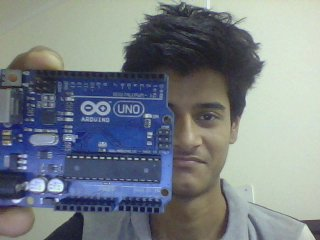

ABOUT ME
 I, Shivang Tripathi, am second year student of Ajay Kumar Garg Engineering College pursuing my Bachelors in Electrical and Electronics engineering. Hailing from the city of Nawabs(Lucknow) , I like learning and exploring into the unknown for anything and everything. I often find myself interested in anything which is even remotely connected to computing systems(Both hardware and software end).Download this thang!Or this apk.
Currently recruited in the prestigious department of AKGEC,ie, Software Incubator, I plan to learn loads of new stuff everyday like this mario(still developing) from seniors and peers.